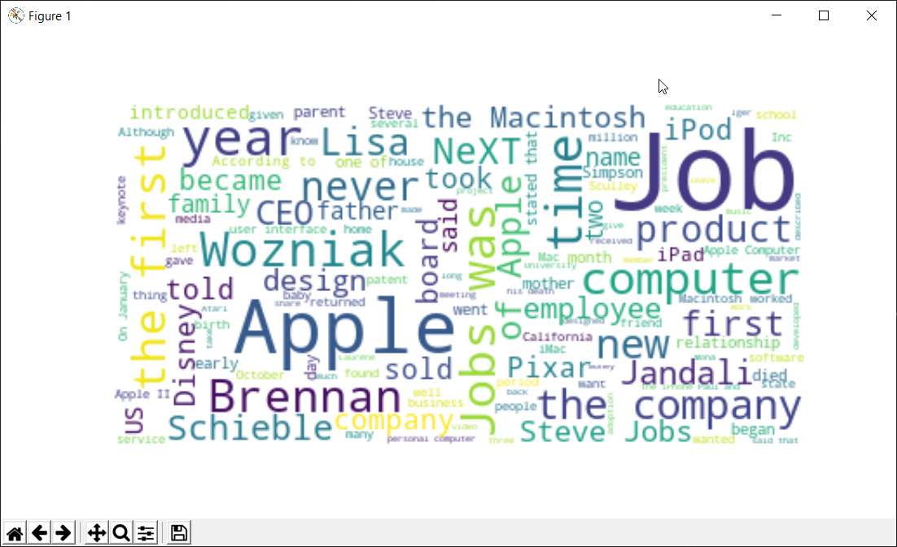

Wiki-Wordcloud-maker
Creates a wordcloud image based on a given Wikipedia article

Creates a wordcloud image based on a given Wikipedia article
After downloading the repository repository, install the requirements by navigating to the directory with the command : pip install –r requirements.txt
After following the above steps, run Wiki-Wordcloud-Maker.py
This program was done using PyQt5 for GUI and wordcloud library for creating the image.